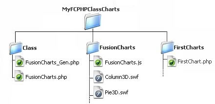

FusionCharts PHP Class API > Basic Setup |
| FusionCharts PHP Class basically consists of 2 files : FusionCharts_Gen.php and FusionCharts.php. The primary requirement to use the class is to keep the 2 files in one folder. Thats all. |
For convenient use of FusionCharts PHP class within your projects, we would recommend to follow the folder structure described below : (though this is not any hard and fast rule to follow)
|
And you are ready to unleash the power of FusionCharts with PHP! You can save your applications within different folders inside the root MyFCPHPClassCharts folder so as it builds up the following hierarchy. |
 |
You may go for any other folder structure you wish; just make sure to keep FusionCharts_Gen.php and FusionCharts.php in one folder. Let’s go ahead and create our first chart with FusionCharts PHP class. |